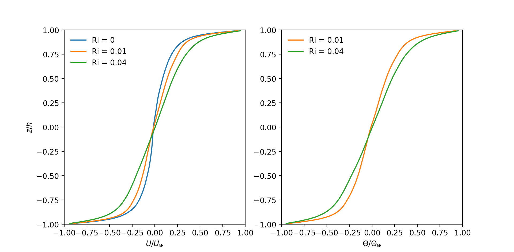
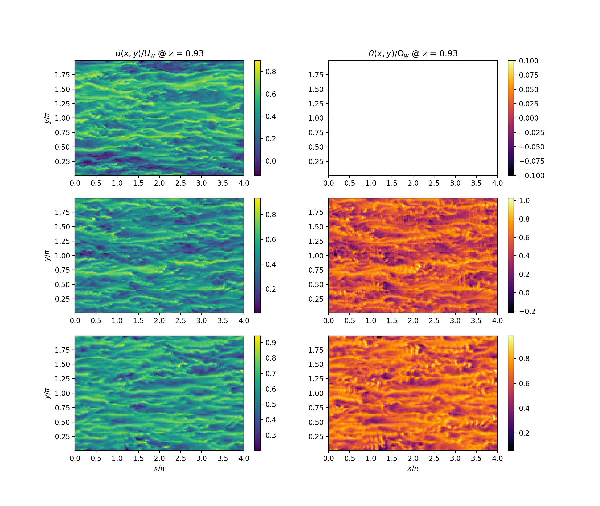
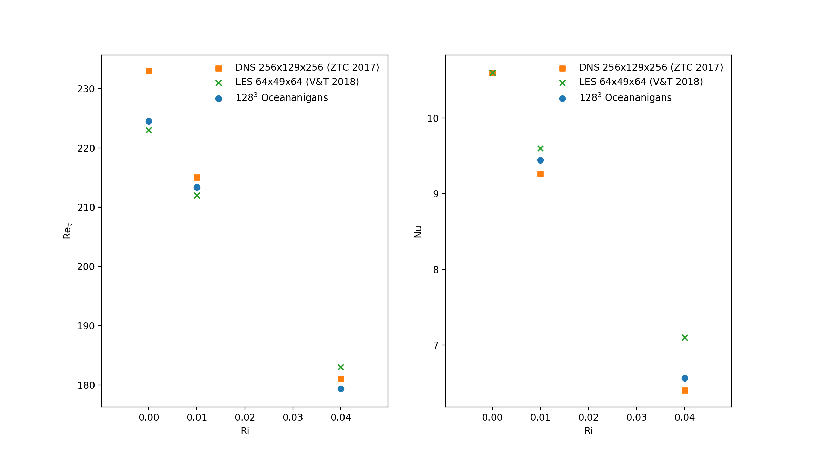
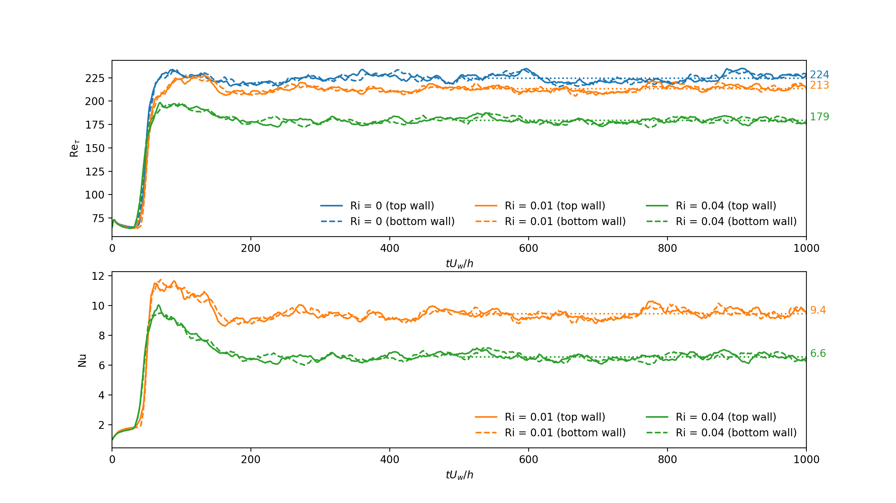
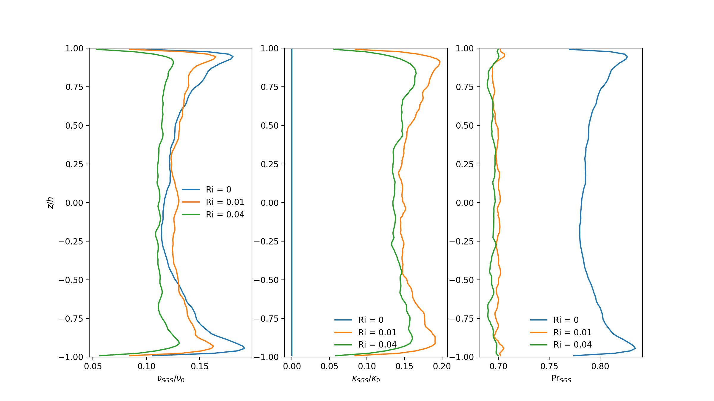

Stratified Couette flow
In regular plane Couette flow, a viscous fluid is situated between two infinite, parallel plates and usually the top plate moves at some constant velocity generating a linear velocity profile in steady state \citep[\S4.2–4.3]{Batchelor00}.
In stratified Couette flow, the plates are additionally held at fixed temperatures to provide a stable stratification. It is a canonical geometry in which to investigate the dynamics of stratified shear flows as it exhibits a transition to turbulence, intermittent turbulence, coherent structures, and diapycnal mixing among other rich behavior \citep{Zhou17}.
In this test we follow \citet{Vreugdenhil18} who use stratified Couette flow as a test of their large-eddy simulation model. We will compare our results to theirs and the direct numerical simulation results of \citet{Deusebio15} and \citet{Zhou17}.
Simulation setup
In our setup replicating that of \citet{Vreugdenhil18}, a domain of size $(L_x, L_y, L_z)/h = (4\pi, 2\pi, 2)$ is bounded in the vertical $z$-direction by two infinite, parallel plates or walls at $z = \pm h$ with horizontal velocity $u = \pm U_w$ and constant temperature $\theta = \pm \Theta_w$ where $\theta$ denotes temperature in this section. The resulting flow is governed by the Reynolds, Richardson, and Prandtl numbers
where $\nu$ is the kinematic viscosity, $\kappa$ is the thermal diffusivity, $\alpha$ is the thermal expansion coefficient, and $g$ is the gravitational acceleration.
Defining horizontal averages for velocity $U = \langle u \rangle$ and $\Theta = \langle \theta \rangle$ we can define the friction velocity $u_\tau$ and friction temperature $\theta_\tau$ at the wall by
where $\tau_w$ is the wall stress and $q_w = u_\tau \theta_\tau$ is the wall heat flux.
From here the friction Reynolds number and the Nusselt number can be defined
which can be computed and compared.
Velocity and temperature
 
$\mathrm{Re}_\tau$ and $\mathrm{Nu}$ values
 
LES viscosity and diffusivity
